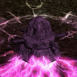
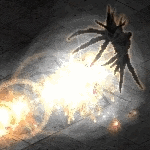
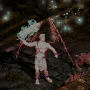
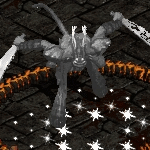
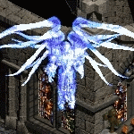
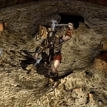

DUNGEON UBERQUESTS
Small dungeons inhabited by a greater evil just waiting for you to enter its realm. Prepare well before entering an uberquest area.
|
1/12 Creature of Flame  Level |
Location Lore Strategy Reward
Horazon's Focus
Keep in Inventory to Gain Bonus Required Level: 40 (3 to 5)% Life stolen per Hit (3 to 5)% Mana stolen per Hit -50 Defense +(21 to 25) to all Attributes |
|
2/12 Infernal Machine  Level |
Location Lore Strategy Reward
Optical Detector
Keep in Inventory to Gain Bonus Required Level: 60 +200 Crafting Points +(5 to 15) to all Attributes All Resists +(10 to 15)% +2 to Light Radius |
|
3/12 Death Projector Level |
Location Once you enter, you cannot go back trough the stairs. Lore Strategy Reward
Laser Focus Crystal
Keep in Inventory to Gain Bonus Required Level: 80 Increase Maximum Life 10% Increase Maximum Mana 10% +(6 to 15)% to Experience Gained |
|
4/12 Azmodan  Level |
Location Lore Strategy Reward
Azmodan's Heart
Keep in Inventory to Gain Bonus Required Level: 100 All Resists +(31 to 40)% +5% to All Maximum Resistances Reduces Vendor Prices 10% 2% chance to drop a trophy on Destruction difficulty. Cube the trophy with the charm for a small bonus.
Azmodan Trophy
Cube with the Azmodan's Heart... +150 to Life +150 to Mana |
|
5/12 Rathma Square  Level |
Location Lore Strategy Reward
Spirit Trance Herb
Keep in Inventory to Gain Bonus Required Level: 100 10% Increased Attack Speed 10% Faster Cast Rate (21 to 150)% Bonus to Attack Rating Regenerate Life +(11 to 40) 2% chance to drop a trophy on Destruction difficulty. Cube the trophy with the charm for a small bonus.
Rathma Square Trophy
Cube with the Spirit Trance Herb... 10% Chance of Uninterruptable Attack |
|
6/12 Cathedral of Vanity  Level |
Location Lore Strategy Reward
Idol of Vanity
Keep in Inventory to Gain Bonus Required Level: 100 15% Increased Overall Speed Cannot Be Frozen 2% chance to drop a trophy on Destruction difficulty. Cube the trophy with the charm for a small bonus.
Cathedral of Vanity Trophy
Cube with the Idol of Vanity... +10% Bonus to Summoned Minion Life +10% Bonus to Summoned Minion Damage Bonus quest See THIS PAGE for more information about Inarius' Revenge. |
|
7/12 Toraja
Level |
Location Lore Strategy Reward (requires the Crystalline Flame Medaillion)
Crystalline Flame Medaillion + Arcane Crystal → returns Crystalline Flame Medaillion with added bonuses
This upgrade recipe adds the following bonuses: All Resists +10% Regenerate Life +100 See THIS PAGE for more information about the Crystalline Flame Medaillion. Toraja (and Yshari Sanctum) on Destruction difficulty is the only place in the game where you can find the following three Great Runes. These runes are required for the most powerful runewords and their chance to drop ratio is 3:2:1, from first to last.
See THIS PAGE for more information about the Yshari Sanctum. |

|
8/12 Kabraxis
Level |
Location Lore Strategy Reward 
Soul of Kabraxis
Keep in Inventory to Gain Bonus Required Level: 100 +1 to All Skills 50% Chance to cast level 49 Trinity Nova when you Die 2% chance to drop a trophy on Destruction difficulty. Cube the trophy with the charm for a small bonus.
Kabraxis Trophy
Cube with the Soul of Kabraxis... 2% Reanimate as: Random monster (including Elites) See THIS PAGE for the list of reanimates. Elemental seals
Soul of Kabraxis + 5x Great Gems (different) → Soul of Kabraxis with added bonuses
This upgrade recipe adds the following bonuses: +(0 to 5)% to Maximum Cold Resist +(0 to 5)% to Maximum Lightning Resist +(0 to 5)% to Maximum Poison Resist +20 Required Level |

|
9/12 Vizjun Level |
Location Lore Strategy Reward
Cold Fusion Schematics
Keep in Inventory to Gain Bonus Required Level: 100 5% Chance to cast level 10 Time Strike on striking 100% Chance to cast level 59 Blast Wave when you Die +(11 to 50) to Strength +(11 to 50) to Dexterity +(11 to 50) to Vitality +(11 to 50) to Energy 2% chance to drop a trophy on Destruction difficulty. Cube the trophy with the charm for a small bonus.
MCS Trophy
Cube with the Cold Fusion Schematics... +(1 to 20) to Strength +(1 to 20) to Dexterity +(1 to 20) to Vitality +(1 to 20) to Energy Drop Bias |
|
10/12 Uldyssian
 Level
|
Location
Lore
Strategy
Reward
Uldyssian's Sword
Keep in Inventory to Gain Bonus Required Level: 120 5% Chance to cast level 1 Uldyssian's Time Freeze when Struck +(0 to 2) to All Skills All Resists +(11 to 30)% Level 1 Purify (100/100 Charges) 2% chance to drop a trophy on Destruction difficulty. Cube the trophy with the charm for a small bonus. Uldyssian's Trophy
Cube with Uldyssian's Sword... (1 to 5)% Deadly Strike Drop Bias
|
|
11/12 Startled Witch
Level |
Location Lore Strategy Reward
The Sleep
Keep in Inventory to Gain Bonus Required Level: 120 This empty charm allows you to add a powerful enchantment to it by transmuting it with any one of the 17 existing trophies (except the Triune trophy). Each trophy adds an unique bonus, but only one trophy can be applied, only once, so choose carefully.
The Sleep + Trophy (any except Triune) → The Sleep with added bonuses
This upgrade recipe adds the following bonuses:
|

|
12/12 The Void Level |
Location Lore Rathma, their son, had avoided the slaughter that followed, and became the servant and student of a mystical dragon-guardian of the Sanctuary – Trag'Oul. After a thousand years, Lilith escaped the Void in the middle of the Sin War events, faming Uldyssian and making him fight the Triune and various related demons with his companions - one of them being Mendeln, his brother. Rathma took in Mendeln, and trained him as his apprentice – the two of them being the first Necromancers, following the teachings of Trag'Oul. Eventually, Rathma was found and sent to the Void by Inarius, but Trag'Oul sent Mendeln to retrieve Rathma at a great risk. Before the end of the Sin War, Lilith, too, was sent to the Void again, by Inarius. Uldyssian, defeating Inarius, now literally stopped and banished the angels and demons single-handedly – finishing the Sin War. Trying to restore the Sanctuary to it's previous state, he took in all the destruction and damage it suffered during this war, and was guided by Trag'Oul to the Void to release it. After these events, Rathma and others pleaded with the Heavens and Hells to spare Sanctuary and the humans. Finally a deal was struck to keep Sanctuary and humanity in existance – with no war on either side allowed there. Enemies The Sin Innerspace Once you have beaten them all, cube their remnants to get the Sigil of the 7 Deadly Sins. 
Sigil of the 7 Deadly Sins
Quest Ring Required Level: 120 +1 to Mage Rage +(26 to 50) to All Attributes +200 to Life +200 to Mana +(6 to 15) to Light Radius Then use your Mage Rage to release your inner rage and clear yourself from sins, expunging them to nothingness. With enough power, it is possible to, in this way, temporarily create small figmets of reality or summon a similar powerful moment – now long gone. Bosses Reward
Rathma's Supremacy
Keep in Inventory to Gain Bonus Required Level: 120 +(5 to 10) to Light Radius Bonus quest To upgrade it, cube it while you have two swirlies (these last for 1 minute) for having killed both Rathma and Mendeln at the same time. Rathma's Supremacy → Rathma's Supremacy with added bonuses
This upgrade recipe adds the following bonuses:
+50 to All Attributes +(3 to 7) to Teleport Enchanting Crystal Sacred Unique weapon/armor + Oil of Enhancement + Enchanting Crystal → reroll to SU/SSU/SSSU
This will keep the same item type (eg. Sacred Bone Helm → Sacred Bone Helm), but can change a SU to SSU or SSSU, and vice versa in any combination (eg. SSSU to SSU). There's a lower chance to get SSU than SU, or SSSU than SSU and SU – with the chance ratios the same as with item drops. Drop Bias |